Apache NetBeans
Apache NetBeansLatest release
NetBeans Platform CRUD Application Tutorial
| This tutorial needs a review. You can edit it in GitHub following these contribution guidelines. |
This tutorial shows you how to integrate a Java DB database into a NetBeans Platform application. We start by exploring a Java DB database, from which we create entity classes. Though the starting point of this tutorial is Java DB, be aware that these instructions are not applicable to Java DB only. Rather, they are relevant to any relational database supported by NetBeans IDE.
Though the database access part of this tutorial is fine for smaller applications, there are many other factors to be aware of in the context of larger real-life scenarios. It is important to be aware of these factors, aspects of which are described here.
Once we have code for accessing the database, we wrap the entity classes into a module, together with modules for the related JPA JARS. Once the data access module is part of our application, we create a new module that provides the user interface for our application. The new module gives the user a tree hierarchy showing data from the database. We then create another module that lets the user edit the data displayed by the first module. By separating the viewer from the editor in distinct modules, we will enable the user to install a different editor for the same viewer, since different editors could be created by external vendors, some commercially and some for free. It is this flexibility that the modular architecture of the NetBeans Platform makes possible.
Once we have an editor, we begin adding CRUD functionality. First, the "R", standing for "Read", is handled by the viewer described above. Next, the "U" for "Update" is handled, followed by the "C" for "Create", and the "D" for "Delete".
At the end of the tutorial, you will have learned about a range of NetBeans Platform features that help you in creating applications of this kind. For example, you will have learned about the UndoRedo.Manager and the ExplorerManager , as well as NetBeans Platform Swing components, such as TopComponent and BeanTreeView .
-
Integrating CRUD Functionality
For troubleshooting purposes, you are welcome to download the completed tutorial source code.
The application you create in this tutorial will look as follows:
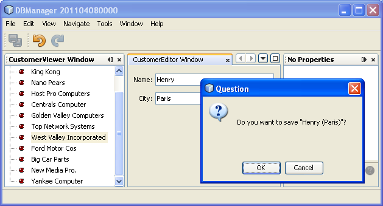
Setting up the Application
Let’s start by creating a new NetBeans Platform application.
-
Choose File > New Project (Ctrl+Shift+N). Under Categories, select NetBeans Modules. Under Projects, select NetBeans Platform Application:
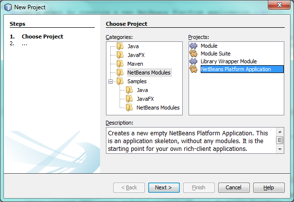
Click Next.
1.
In the Name and Location panel, type DBManager in the Project Name field:
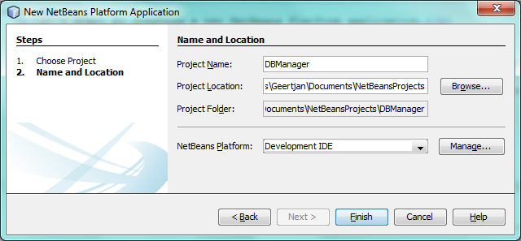
Click Finish.
The IDE creates the DBManager project. The project is a container for all the other modules you will create:
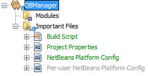
Integrating the Database
In order to integrate the database, you will use tools in the IDE to leverage the Java Persistence API for the creation of entity classes from your database. You will then integrate those entity classes, together with their related JARs, into modules as part of your NetBeans Platform application.
Creating the Entity Classes
In this section, you generate entity classes from a selected database.
-
Let’s start by using the IDE to inspect the database that we will use in our application. Use the Services window (Ctrl-5) to connect to the sample database that is included with NetBeans IDE:
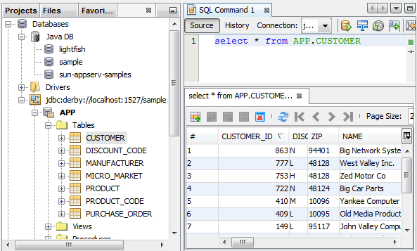
Alternatively, use any database you like and adapt the steps that follow to your particular use case. For Oracle Database, see Connecting to an Oracle Database; for MySQL, see Connecting to a MySQL Database for help.
-
Now we will create a library that will contain entity classes for the tables that we’re interested in for our application. In the IDE, choose File | New Project, followed by Java | Java Class Library and create a new library project, anywhere on disk, named
CustomerLibrary:
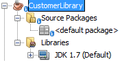
-
In the Projects window, right-click the
CustomerLibraryproject and choose File | New File, followed by Persistence | "Entity Classes from Database". In the wizard, select your database and the tables you need. Here we choose "CUSTOMER", and then "DISCOUNT_CODE" and "MICRO_MARKET" are added automatically, since there is a relationship between these tables:
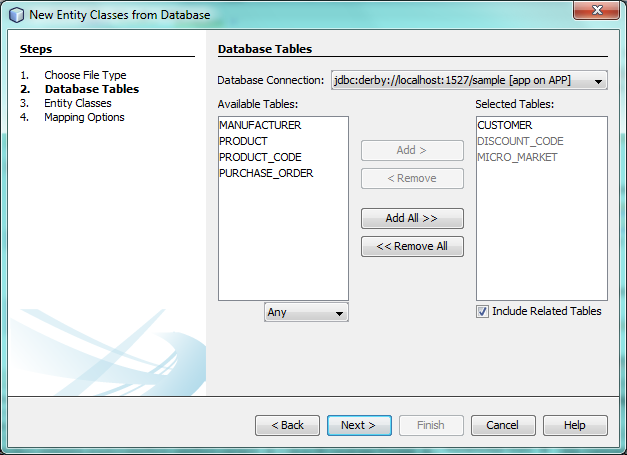
In some versions of the database, MICRO_MARKET does not have a relationship with CUSTOMER. If that is the case, it won’t be marked as being in a relationship and you do not need to include it.
Click Next.
-
Type "demo" as the name of the package where the entity classes will be generated and leave everything else unchanged:
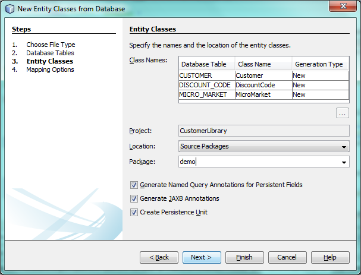
-
Click Finish. Once you have completed this step, look at the generated code and notice that, among other files, you now have a
persistence.xmlfile in a folder called META-INF, as well as entity classes for each of your tables:
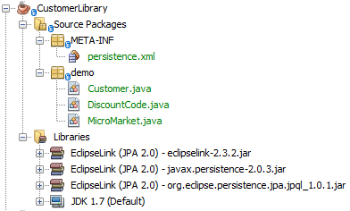
Right-click the project, choose Properties, and specify in the Packaging tab that the libraries should be copied when the project is built:
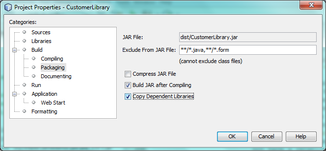
-
Right-click and then build the
CustomerLibrary. Switch to the Files window (Ctrl-2) and notice that you have a JAR file in the library project’s "dist" folder and that the "dist" folder also contains the three JARs that your project depends on:
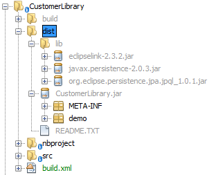
Wrapping the Entity Class JAR in a Module
In this section, you add your first module to your application! The new NetBeans module will wrap the JAR file you created in the previous section.
-
Right-click the
DBManager's "Modules" node in the Projects window and choose Add New Library:
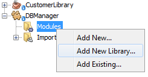
-
In the "New Library Wrapper Module Project" dialog, select the JAR you created in the previous subsection. No need to include a license; leave the License field empty:
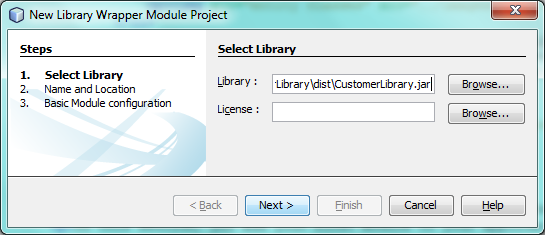
Click Next.
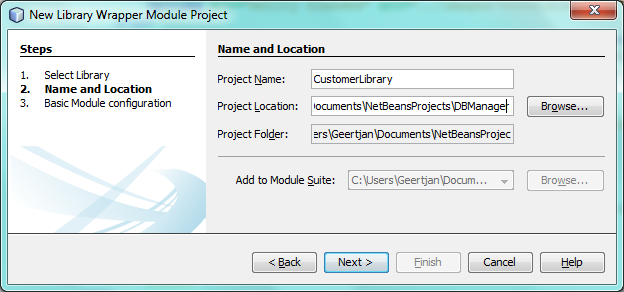
Name the project CustomerLibrary , as shown above. Then click Next.
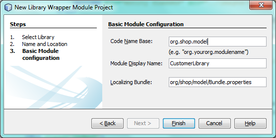
Let’s assume the application is for analyzing customers at http://shop.org, in which case a unique identifier org.shop.model is appropriate for the code name base, since this module provides the model (also known as "domain") of the application.
You now have your first custom module in your new application, which wraps the JAR containing the entity classes and the persistence.xml file:
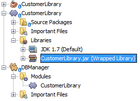
Wrapping Supporting JARs in Modules
In this section, you create two new modules, wrapping the EclipseLink JARs, as well as the database connector JAR.
-
Do the same as you did when creating the library wrapper for the entity class JAR, but this time for the EclipseLink JARs, which are in the "dist/lib" folder of the CustomerLibrary project that you created in the previous section.
In the Library Wrapper Module wizard, you can use Ctrl-Click to select multiple JARs.
Name the project Eclipselink and use javax.persistence as the code name base of this library wrapper module. Now your application consists of two custom modules:

So far, each of your modules exists to wrap one or more JARs into the application.
-
Next, create the third library wrapper module; this time for the Java DB client JAR, which is named
derbyclient.jar. The location of this JAR depends on your version of the JDK, as well as on your operating system. For example, on Windows and Linux systems, this JAR could be found within your JDK distribution at"db/lib/derbyclient.jar". On Windows systems, depending on your version of GlassFish, you could find this JAR here,C:\Program Files\glassfish-3.1.2-b22\javadb\lib\derbyclient.jar. UseDerbyclientas the project name and useorg.apache.derbyas the code name base of this module.
To use an embedded Java DB database, instead of the external Java DB database used in this tutorial, read this article.
Your application structure should now be as shown below. You should see that you have an application that contains three modules. One module contains the customer library, while the other two contain the EclipeLink JARs and the Derby Client JAR:
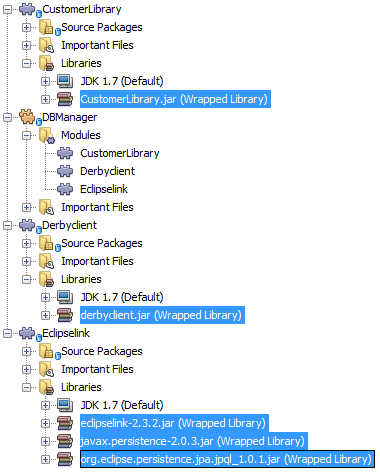
Now it is, finally, time to do some coding!
Designing the User Interface
In this section, you create a simple prototype user interface, providing a window that uses a JTextArea to display data retrieved from the database.
-
Right-click the
DBManager's Modules node in the Projects window and choose Add New. Create a new module namedCustomerViewer, with the code name baseorg.shop.viewer. Click Finish. You now have a fourth module in your application.
-
In the Projects window, right-click the new module and choose New | Window. Specify that it should be created in the
explorerposition and that it should open when the application starts. SetCustomerVieweras the window’s class name prefix. Click Finish.
1.
Use the Palette (Ctrl-Shift-8) to drag and drop a JTextArea on the new window:
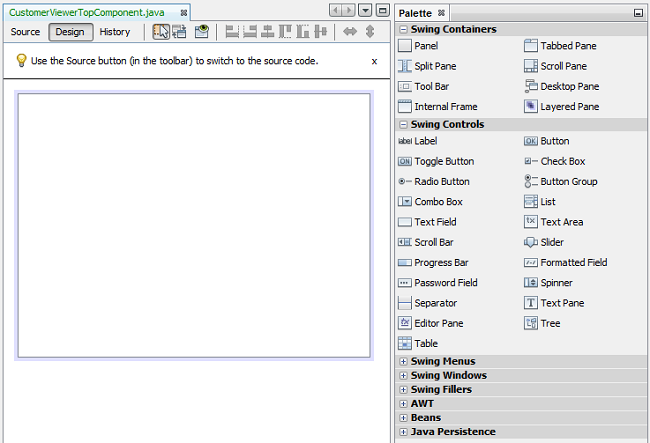
-
Click the "Source" tab and the source code of the
TopComponentopens. Add this to the end of the TopComponent constructor:
EntityManager entityManager = Persistence.createEntityManagerFactory("CustomerLibraryPU").createEntityManager();
Query query = entityManager.createNamedQuery("Customer.findAll");
List<Customer> resultList = query.getResultList();
for (Customer c : resultList) {
jTextArea1.append(c.getName() + " (" + c.getCity() + ")" + "\n");
}| Since you have not set dependencies on the modules that provide the Customer object and the persistence JARs, the statements above will be marked with red error underlines. These will be fixed in the section that follows. |
Above, you can see references to a persistence unit named "CustomerLibraryPU", which is the name set in the persistence.xml file. In addition, there is a reference to one of the entity classes, called Customer , which is in the entity classes module. Adapt these bits to your needs, if they are different to the above.
Setting Dependencies
In this section, you enable some of the modules to use code from some of the other modules. You do this very explicitly by setting intentional contracts between related modules, i.e., as opposed to the accidental and chaotic reuse of code that tends to happen when you do not have a strict modular architecture such as that provided by the NetBeans Platform.
-
The entity classes module (named "CustomerLibrary") needs to have dependencies on the Derby Client module as well as on the EclipseLink module. Right-click the
CustomerLibrarymodule, choose Properties, and use the Libraries tab to set dependencies on the two modules that theCustomerLibrarymodule needs.
-
The
CustomerViewermodule needs a dependency on the EclipseLink module as well as on the entity classes module. Right-click theCustomerViewermodule, choose Properties, and use the Libraries tab to set dependencies on the two modules that theCustomerViewermodule needs.
-
Open the
CustomerViewerTopComponentin the Source view, right-click in the editor, and choose "Fix Imports". The IDE is now able to add the required import statements, because the modules that provide the required classes are now available to theCustomerViewerTopComponent. Rather thanjavax.management.Persistence, make sure to selectjavax.persistence.Persistence. The import statememts you should now have are as follows:
import demo.Customer;
import java.util.List;
import javax.persistence.EntityManager;
import javax.persistence.Persistence;
import javax.persistence.Query;
import org.netbeans.api.settings.ConvertAsProperties;
import org.openide.awt.ActionID;
import org.openide.awt.ActionReference;
import org.openide.util.NbBundle.Messages;
import org.openide.windows.TopComponent;You now have set contracts between the modules in your application, giving you control over the dependencies between distinct pieces of code.
Running the Prototype
In this section, you run the application so that you can see that you’re correctly accessing your database.
-
Start your database server.
1. Run the application. You should see this:
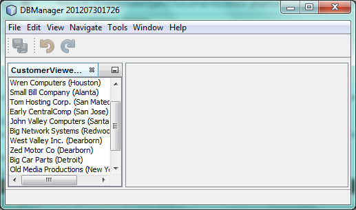
You now have a simple prototype, consisting of a NetBeans Platform application that displays data from your database, which you will extend in the next section.
Integrating CRUD Functionality: Read
In order to create CRUD functionality that integrates smoothly with the NetBeans Platform, some very specific NetBeans Platform coding patterns need to be implemented. The sections that follow describe these patterns in detail.
In this section, you change the JTextArea , introduced in the previous section, for a NetBeans Platform explorer view. NetBeans Platform explorer views are Swing components that integrate better with the NetBeans Platform than standard Swing components do. Among other things, they support the notion of a context, which enables them to be context sensitive.
Representing your data, you will have a generic hierarchical model provided by a NetBeans Platform Node class, which can be displayed by any of the NetBeans Platform explorer views. This section ends with an explanation of how to synchronize your explorer view with the NetBeans Platform Properties window.
-
In your
TopComponent, delete theJTextAreain the Design view and comment out its related code in the Source view:
EntityManager entityManager = Persistence.createEntityManagerFactory("CustomerLibraryPU").createEntityManager();
Query query = entityManager.createNamedQuery("Customer.findAll");
List<Customer> resultList = query.getResultList();
//for (Customer c : resultList) {
// jTextArea1.append(c.getName() + " (" + c.getCity() + ")" + "\n");
//}-
Right-click the
CustomerViewermodule, choose Properties, and use the Libraries tab to set dependencies on the Nodes API and the Explorer & Property Sheet API.
-
Next, change the class signature to implement
ExplorerManager.Provider:
final class CustomerViewerTopComponent extends TopComponent implements ExplorerManager.ProviderYou will need to override getExplorerManager()
@Override
public ExplorerManager getExplorerManager() {
return em;
}At the top of the class, declare and initialize the ExplorerManager :
private static ExplorerManager em = new ExplorerManager();Watch Top 10 NetBeans APIs for details on the above code, especially the screencast dealing with the Nodes API and the Explorer & Property Sheet API.
-
Switch to the
TopComponentDesign view, right-click in the Palette, choose Palette Manager | Add from JAR. Then browse to theorg-openide-explorer.jar, which is inplatform/modulesfolder, within the NetBeans IDE installation directory. Choose the BeanTreeView and complete the wizard. You should now seeBeanTreeViewin the Palette. Drag it from the Palette and drop it on the window.
-
Create a factory class that will create a new BeanNode for each customer in your database:
import demo.Customer;
import java.beans.IntrospectionException;
import java.util.List;
import org.openide.nodes.BeanNode;
import org.openide.nodes.ChildFactory;
import org.openide.nodes.Node;
import org.openide.util.Exceptions;
public class CustomerChildFactory extends ChildFactory<Customer> {
private List<Customer> resultList;
public CustomerChildFactory(List<Customer> resultList) {
this.resultList = resultList;
}
@Override
protected boolean createKeys(List<Customer> list) {
for (Customer Customer : resultList) {
list.add(Customer);
}
return true;
}
@Override
protected Node createNodeForKey(Customer c) {
try {
return new BeanNode(c);
} catch (IntrospectionException ex) {
Exceptions.printStackTrace(ex);
return null;
}
}
}-
Back in the
CustomerViewerTopComponent, use theExplorerManagerto pass the result list from the JPA query in to theNode:
EntityManager entityManager = Persistence.createEntityManagerFactory("CustomerLibraryPU").createEntityManager();
Query query = entityManager.createNamedQuery("Customer.findAll");
List<Customer> resultList = query.getResultList();
em.setRootContext(new AbstractNode(Children.create(new CustomerChildFactory(resultList), true)));
//for (Customer c : resultList) {
// jTextArea1.append(c.getName() + " (" + c.getCity() + ")" + "\n");
//}-
Run the application. Once the application is running, open the Properties window. Notice that even though the data is available, displayed in a
BeanTreeView, theBeanTreeViewis not synchronized with the Properties window, which is available via Window | Properties. In other words, nothing is displayed in the Properties window when you move up and down the tree hierarchy:
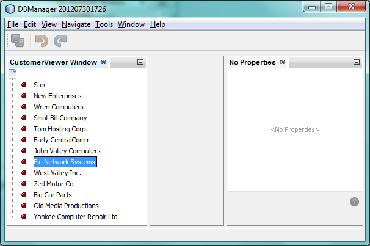
-
Synchronize the Properties window with the
BeanTreeViewby adding the following to the constructor in theTopComponent:
associateLookup(ExplorerUtils.createLookup(em, getActionMap()));Here we add the TopComponent 's ActionMap and ExplorerManager to the Lookup of the TopComponent . A side effect of this is that the Properties window starts displaying the display name and tooltip text of the selected Node . Run the application again and notice that the Properties window (available from the Window menu) is now synchronized with the explorer view:
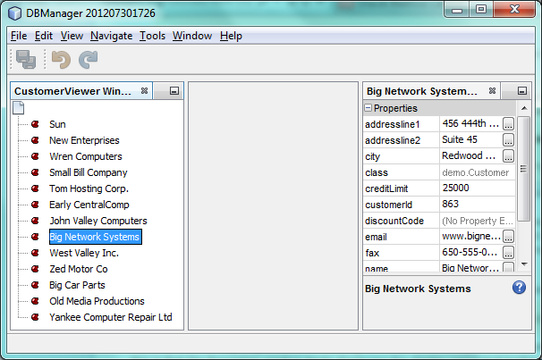
Now you are able to view your data in a tree hierarchy, as you would be able to do with a JTree . However, you’re also able to swap in a different explorer view without needing to change the model at all because the ExplorerManager mediates between the model and the view. Finally, you are now also able to synchronize the view with the Properties window.
Integrating CRUD Functionality: Update
In this section, you first create an editor. The editor will be provided by a new NetBeans module. So, you will first create a new module. Then, within that new module, you will create a new TopComponent , containing two JTextFields , for each of the columns you want to let the user edit. You will need to let the viewer module communicate with the editor module. Whenever a new Node is selected in the viewer module, you will add the current Customer object to the Lookup . In the editor module, you will listen to the Lookup for the introduction of Customer objects. Whenever a new Customer object is introduced into the Lookup , you will update the JTextFields in the editor.
Next, you will synchronize your JTextFields with the NetBeans Platform’s Undo, Redo, and Save functionality. In other words, when the user makes changes to a JTextField , you want the NetBeans Platform’s existing functionality to become available so that, instead of needing to create new functionality, you’ll simply be able to hook into the NetBeans Platform’s support. To this end, you will need to use UndoRedoManager , together with AbstractSavable .
-
Create a new module, named
CustomerEditor, withorg.shop.editoras its code name base.
-
Right-click the
CustomerEditormodule and choose New | Window. Make sure to specify that the window should appear in theeditorposition and that it should open when the application starts. In the final panel of the wizard, set "CustomerEditor" as the class name prefix.
-
Use the Palette (Ctrl-Shift-8) to add two
JLabelsand twoJTextFieldsto the new window. Set the texts of the labels to "Name" and "City" and set the variable names of the twoJTextFieldstonameFieldandcityField. In the GUI Builder, the window should now look something like this:
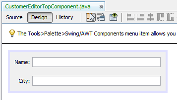
-
Run the application and make sure that you see the following when the application starts up:
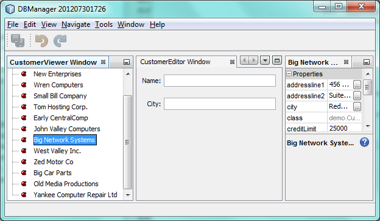
-
Now we can start adding some code. We need to do the following:
Show Selected Data in the Editor
In this section, you allow the user to show the currently selected Customer object in the editor.
-
Start by tweaking the
CustomerViewermodule so that the currentCustomerobject is added to the viewer window’sLookupwhenever a newNodeis selected. Do this by adding the currentCustomerobject to theLookupof the Node, as follows (note the parts in bold):
@Override
protected Node createNodeForKey(Customer c) {
try {
return new CustomerBeanNode(c);
} catch (IntrospectionException ex) {
Exceptions.printStackTrace(ex);
return null;
}
}
private class CustomerBeanNode extends BeanNode {
public CustomerBeanNode(Customer bean) throws IntrospectionException {
super(bean, Children.LEAF, Lookups.singleton(bean));
}
}Now, whenever a new Node is created, which happens when the user selects a new customer in the viewer, a new Customer object is added to the Lookup of the Node .
-
Let’s now change the editor module in such a way that its window will end up listening for
Customerobjects being added to theLookup. First, set a dependency in the editor module on the module that provides the entity class, as well as the module that provides the persistence JARs.
-
Next, change the
CustomerEditorTopComponentclass signature to implementLookupListener:
public final class CustomerEditorTopComponent extends TopComponent implements LookupListener-
Override the
resultChangedso that theJTextFieldsare updated whenever a newCustomerobject is introduced into theLookup:
@Override
public void resultChanged(LookupEvent lookupEvent) {
Lookup.Result r = (Lookup.Result) lookupEvent.getSource();
Collection<Customer> coll = r.allInstances();
if (!coll.isEmpty()) {
for (Customer cust : coll) {
nameField.setText(cust.getName());
cityField.setText(cust.getCity());
}
} else {
nameField.setText("[no name]");
cityField.setText("[no city]");
}
}-
Now that the
LookupListeneris defined, we need to add it to something. Here, we add it to theLookup.Resultobtained from the global context. The global context proxies the context of the selectedNode. For example, if "Ford Motor Co" is selected in the tree hierarchy, theCustomerobject for "Ford Motor Co" is added to theLookupof theNodewhich, because it is the currently selectedNode, means that theCustomerobject for "Ford Motor Co" is now available in the global context. That is what is then passed to theresultChanged, causing the text fields to be populated.
All of the above starts happening, i.e., the LookupListener becomes active, whenever the editor window is opened, as you can see below:
@Override
public void componentOpened() {
result = Utilities.actionsGlobalContext().lookupResult(Customer.class);
result.addLookupListener(this);
resultChanged(new LookupEvent(result));
}
@Override
public void componentClosed() {
result.removeLookupListener(this);
result = null;
}Since the editor window is opened when the application starts, the LookupListener is available at the time that the application starts up.
-
Finally, declare the result variable at the top of the class, like this:
private Lookup.Result result = null;-
Run the application again and notice that the editor window is updated whenever you select a new
Node:
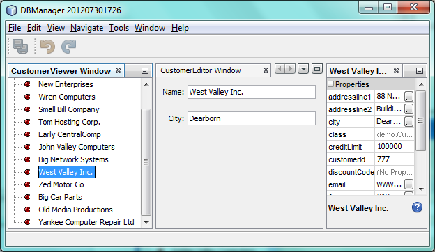
However, note what happens when you switch the focus to the editor window:
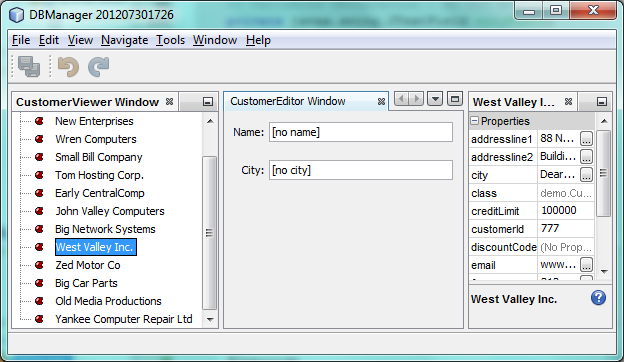
Because the Node is no longer current, the Customer object is no longer in the global context. This is the case because, as pointed out above, the global context proxies the Lookup of the current Node . Therefore, in this case, we cannot use the global context. Instead, we will use the local Lookup provided by the Customer window.
Rewrite this line:
result = Utilities.actionsGlobalContext().lookupResult(Customer.class);To this:
result = WindowManager.getDefault().findTopComponent("CustomerViewerTopComponent").getLookup().lookupResult(Customer.class);The string "CustomerViewerTopComponent" is the ID of the CustomerViewerTopComponent , which is a string constant that you can find in the source code of the CustomerViewerTopComponent .
One drawback of the approach above is that now our CustomerEditorTopComponent only works if it can find a TopComponent with the ID "CustomerViewerTopComponent". Either this needs to be explicitly documented, so that developers of alternative editors can know that they need to identify the viewer TopComponent this way, or you need to rewrite the selection model, as described here by Tim Boudreau.
Enable the Undo/Redo Actions for the Editor
What we’d like to have happen is that whenever the user makes a change to one of the JTextFields , the "Undo" button and the "Redo" button, as well as the related menu items in the Edit menu, should become enabled. To that end, the NetBeans Platform makes the UndoRedo.Manager available, which is based on the Swing javax.swing.undo.UndoManager class.
-
Declare and instantiate a new
UndoRedoManagerat the top of theCustomerEditorTopComponent:
private UndoRedo.Manager manager = new UndoRedo.Manager();-
Next, override the
getUndoRedo()method in theCustomerEditorTopComponent:
@Override
public UndoRedo getUndoRedo() {
return manager;
}-
In the constructor of the
CustomerEditorTopComponent, add aKeyListenerto theJTextFieldsand, within the related methods that you need to implement, add theUndoRedoListeners:
nameField.getDocument().addUndoableEditListener(manager);
cityField.getDocument().addUndoableEditListener(manager);-
Run the application and try out the Undo and Redo features, the buttons as well as the menu items. The functionality works exactly as you would expect:
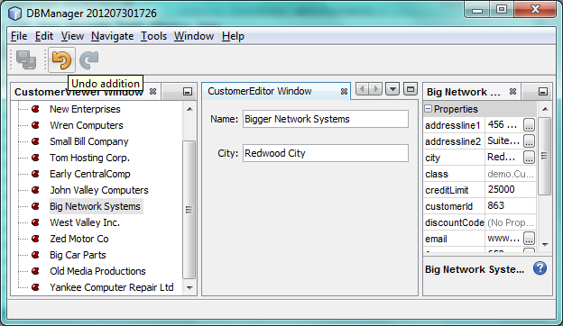
You might want to change the KeyListener so that not ALL keys cause the undo/redo functionality to be enabled. For example, when Enter is pressed, you probably do not want the undo/redo functionality to become available. Therefore, tweak the code above to suit your business requirements.
Save Changes in the Editor
We need to integrate with the NetBeans Platform’s Save functionality:
-
Set dependencies on the Dialogs API, which provides standard dialogs, one of which we will use in this section.
-
In the
CustomerEditorTopComponentconstructor, add a call to fire a method (which will be defined in the next step) whenever a key is released in either of the two text fields, since a key release event indicates that something has changed:
nameField.addKeyListener(new KeyAdapter() {
@Override
public void keyReleased(KeyEvent e) {
modify();
}
});
cityField.addKeyListener(new KeyAdapter() {
@Override
public void keyReleased(KeyEvent e) {
modify();
}
});You might also want to check whether the text in the text field has actually changed, prior to calling the modify() method.
-
Here is the method and inner class referred to above. First, the method that is fired whenever a change is detected. Then, a
AbstractSavableis dynamically added to theInstanceContentwhenever a change is detected:
private void modify() {
if (getLookup().lookup(MySavable.class) == null) {
instanceContent.add(new MySavable());
}
}
To use the above code snippet, you need to set up a dynamic Lookup, as described in the NetBeans Platform Quick Start. Since the NetBeans Platform Quick Start is a prerequisite for following this tutorial, no time will be spent explaining dynamic Lookups here. If you do not know how to use InstanceContent or if the term "dynamic Lookup" means nothing to you, please stop working on this tutorial and work through the NetBeans Platform Quick Start instead.
|
-
Finally, we need to create an
AbstractSavable, which is the default implementation of theSavableinterface.
By publishing an AbstractSavable into the Lookup of a TopComponent , the Save actions will become enabled when the TopComponent is selected.
In addition, and automatically, the AbstractSavable is registered into a second Lookup , which is the global Lookup for Savable s.
When the handleSave method is invoked, the Savable is unregistered from both these Lookup s. If the application closes down and the Savable has not been unregistered from the global Lookup for Savable s, a small Exit dialog will be shown, prompting the user to invoke the Save action. Below, the findDisplayName and icon-related methods define the content of the Exit dialog.
All the code below is an inner class within CustomerEditorTopComponent .
|
private static final Icon ICON = ImageUtilities.loadImageIcon("org/shop/editor/Icon.png", true);
private class MySavable extends AbstractSavable implements Icon {
MySavable() {
register();
}
@Override
protected String findDisplayName() {
String name = nameField.getText();
String city = cityField.getText();
return name + " from " + city;
}
@Override
protected void handleSave() throws IOException {
Confirmation message = new NotifyDescriptor.Confirmation("Do you want to save \""
+ nameField.getText() + " (" + cityField.getText() + ")\"?",
NotifyDescriptor.OK_CANCEL_OPTION,
NotifyDescriptor.QUESTION_MESSAGE);
Object result = DialogDisplayer.getDefault().notify(message);
//When user clicks "Yes", indicating they really want to save,
//we need to disable the Save action,
//so that it will only be usable when the next change is made
//to the JTextArea:
if (NotifyDescriptor.YES_OPTION.equals(result)) {
//Handle the save here...
tc().instanceContent.remove(this);
unregister();
}
}
CustomerEditorTopComponent tc() {
return CustomerEditorTopComponent.this;
}
@Override
public boolean equals(Object obj) {
if (obj instanceof MySavable) {
MySavable m = (MySavable) obj;
return tc() == m.tc();
}
return false;
}
@Override
public int hashCode() {
return tc().hashCode();
}
@Override
public void paintIcon(Component c, Graphics g, int x, int y) {
ICON.paintIcon(c, g, x, y);
}
@Override
public int getIconWidth() {
return ICON.getIconWidth();
}
@Override
public int getIconHeight() {
return ICON.getIconHeight();
}
}-
Run the application and notice the enablement/disablement of the Save buttons and menu items:
Right now, nothing happens when you click OK in the "Question" dialog above. In the next step, we add some JPA code for handling persistence of our changes.
-
Next, we add JPA code for persisting our change. Do so by replacing the comment "//Implement your save functionality here." The comment should be replaced by all of the following:
EntityManager entityManager = Persistence.createEntityManagerFactory("CustomerLibraryPU").createEntityManager();
entityManager.getTransaction().begin();
Customer c = entityManager.find(Customer.class, customer.getCustomerId());
c.setName(nameField.getText());
c.setCity(cityField.getText());
entityManager.getTransaction().commit();The "customer" in customer.getCustomerId()() is currently undefined. Add the line in bold in the resultChanged below, after declaring Customer customer; at the top of the class, so that the current Customer object sets the customer , which is then used in the persistence code above to obtain the ID of the current Customer object.
@Override
public void resultChanged(LookupEvent lookupEvent) {
Lookup.Result r = (Lookup.Result) lookupEvent.getSource();
Collection<Customer> c = r.allInstances();
if (!c.isEmpty()) {
for (Customer customer : c) {
*customer = cust;*
nameField.setText(customer.getName());
cityField.setText(customer.getCity());
}
} else {
nameField.setText("[no name]");
cityField.setText("[no city]");
}
}-
Run the application and change some data. Currently, we have no "Refresh" functionality (that will be added in the next step) so, to see the changed data, restart the application.
Refresh the Viewer
Next, we need to add functionality for refreshing the Customer viewer. You might want to add a Timer which periodically refreshes the viewer. However, in this example, we will add a "Refresh" menu item to the Root node so that the user will be able to manually refresh the viewer.
-
In the main package of the
CustomerViewermodule, create a newNode, which will replace theAbstractNodethat we are currently using as the root of the children in the viewer. Note that we also bind all actions in the "Actions/Customer" folder to the context menu of our new root node.
import java.util.List;
import javax.swing.Action;
import org.openide.nodes.AbstractNode;
import org.openide.nodes.Children;
import org.openide.util.NbBundle.Messages;
import org.openide.util.Utilities;
import static org.shop.viewer.Bundle.*;
public class CustomerRootNode extends AbstractNode {
@Messages("CTRL_RootName=Root")
public CustomerRootNode(Children kids) {
super(kids);
setDisplayName(CTRL_RootName());
}
@Override
public Action[] getActions(boolean context) {
List<? extends Action> actionsForCustomer = Utilities.actionsForPath("Actions/Customer");
return actionsForCustomer.toArray(new Action[actionsForCustomer.size()]);
}
}-
Then create a new Java class and register a refresh Action in the "Actions/Customer" folder, which means it will appear in the context menu of the root node that you created above:
import java.awt.event.ActionEvent;
import java.awt.event.ActionListener;
import org.openide.awt.ActionID;
import org.openide.awt.ActionRegistration;
import org.openide.util.NbBundle.Messages;
@ActionID(id="org.shop.viewer.CustomerRootRefreshActionListener", category="Customer")
@ActionRegistration(displayName="#CTL_CustomerRootRefreshActionListener")
@Messages("CTL_CustomerRootRefreshActionListener=Refresh")
public class CustomerRootRefreshActionListener implements ActionListener {
@Override
public void actionPerformed(ActionEvent e) {
CustomerViewerTopComponent.refreshNode();
}
}-
Add this method to the
CustomerViewerTopComponent, for refreshing the view:
public static void refreshNode() {
EntityManager entityManager = Persistence.createEntityManagerFactory("CustomerLibraryPU").createEntityManager();
Query query = entityManager.createNamedQuery("Customer.findAll");
List<Customer> resultList = query.getResultList();
em.setRootContext(new *CustomerRootNode*(Children.create(new CustomerChildFactory(resultList), true)));
}Now replace the code above in the constructor of the CustomerViewerTopComponent with a call to the above. As you can see in the highlighted part above, we are now using our CustomerRootNode instead of the AbstractNode . The CustomerRootNode includes the "Refresh" action, which calls the code above.
-
Run the application again and notice that you have a new root node, with a "Refresh" action:
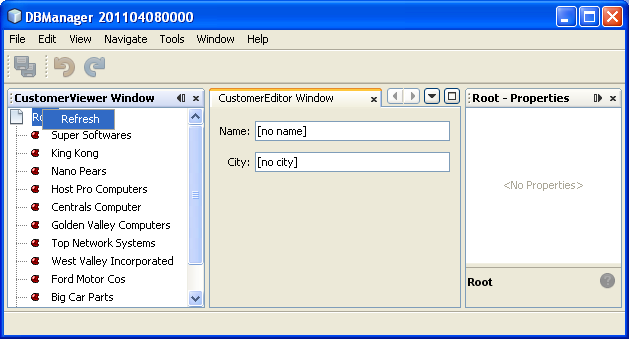
-
Make a change to some data, save it, invoke the Refresh action, and notice that the viewer is updated.
-
As an optional exercise, refresh the node hierarchy when the Save action is invoked. To do so, in your Save functionality, which is in the CustomerEditor module, add the call to the "refreshNode()" method so that, whenever data is saved, an automatic refresh takes place. You can take different approaches when implementing this extension to the save functionality. For example, you might want to create a new module that contains the refresh action, which would also need to contain the node hierarchy, since you need access to the ExplorerManager there. That module would then be shared between the viewer module and the editor module, providing functionality that is common to both.
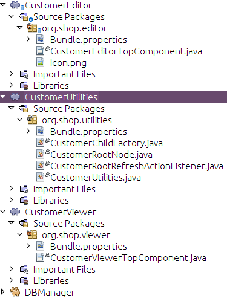
You have now learned how to let the NetBeans Platform handle changes to the JTextFields . Whenever the text changes, the NetBeans Platform Undo and Redo buttons are enabled or disabled. Also, the Save button is enabled and disabled correctly, letting the user save changed data back to the database.
Integrating CRUD Functionality: Create
In this section, you allow the user to create a new entry in the database.
-
In the
CustomerEditormodule create a new Java class named "CustomerNewActionListener". Let theTopComponentbe opened via this Action, together with emptiedJTextFields:
import java.awt.event.ActionEvent;
import java.awt.event.ActionListener;
import org.openide.awt.ActionID;
import org.openide.awt.ActionRegistration;
import org.openide.util.NbBundle.Messages;
import org.openide.windows.WindowManager;
@ActionID(id="org.shop.editor.CustomerNewActionListener", category="File")
@ActionRegistration(displayName="#CTL_CustomerNewActionListener")
@ActionReference(path="Menu/File", position=10)
@Messages("CTL_CustomerNewActionListener=New")
public final class CustomerNewActionListener implements ActionListener {
@Override
public void actionPerformed(ActionEvent e) {
CustomerEditorTopComponent tc = (CustomerEditorTopComponent) WindowManager.getDefault().findTopComponent("CustomerViewerTopComponent");
tc.resetFields();
tc.open();
tc.requestActive();
}
}In the CustomerEditorTopComponent , add the following method for resetting the JTextFields and creating a new Customer object:
public void resetFields() {
customer = new Customer();
nameField.setText("");
cityField.setText("");
}-
In the
AbstractSavable, ensure that a return ofnullindicates that a new entry is saved, instead of an existing entry being updated:
@Override
public void handleSave() throws IOException {
Confirmation message = new NotifyDescriptor.Confirmation("Do you want to save \""
+ nameField.getText() + " (" + cityField.getText() + ")\"?",
NotifyDescriptor.OK_CANCEL_OPTION,
NotifyDescriptor.QUESTION_MESSAGE);
Object result = DialogDisplayer.getDefault().notify(msg);
//When user clicks "Yes", indicating they really want to save,
//we need to disable the Save button and Save menu item,
//so that it will only be usable when the next change is made
//to the text field:
if (NotifyDescriptor.YES_OPTION.equals(result)) {
tc().instanceContent.remove(this);
unregister();
EntityManager entityManager = Persistence.createEntityManagerFactory("CustomerLibraryPU").createEntityManager();
entityManager.getTransaction().begin();
if (customer.getCustomerId() != null) {
Customer c = entityManager.find(Customer.class, customer.getCustomerId());
c.setName(nameField.getText());
c.setCity(cityField.getText());
entityManager.getTransaction().commit();
} else {
Query query = entityManager.createNamedQuery("Customer.findAll");
List<Customer> resultList = query.getResultList();
customer.setCustomerId(resultList.size()+1);
customer.setName(nameField.getText());
customer.setCity(cityField.getText());
//add more fields that will populate all the other columns in the table!
entityManager.persist(customer);
entityManager.getTransaction().commit();
}
}
}-
Run the application again and add a new customer to the database.
Integrating CRUD Functionality: Delete
In this section, let the user delete a selected entry in the database. Using the concepts and code outlined above, implement the Delete action yourself.
-
Create a new action,
DeleteAction. Decide whether you want to bind it to a Customer node or whether you’d rather bind it to the toolbar, the menu bar, keyboard shortcut, or combinations of these. Depending on where you want to bind it, you will need to use a different approach in your code. Read the tutorial again for help, especially by looking at how the "New" action was created, while comparing it to the "Refresh" action on the root node.
-
Get the current
Customerobject, return an 'Are you sure?' dialog, and then delete the entry. For help on this point, read the tutorial again, focusing on the part where the "Save" functionality is implemented. Instead of saving, you now want to delete an entry from the database.
Further Reading
This concludes the NetBeans Platform CRUD Tutorial. This document has described how to create a new NetBeans Platform application with CRUD functionality for a given database.
A problem with the design of the application you created in this tutorial is that the data access code is embedded within the user interface. For example, the calls to the EntityManager for persisting changes are found within the TopComponent. To work towards an architecture that enables a clean separation between data access code and the user interface, see this series of articles:
For information on embedding a database in a NetBeans Platform application, see Embedded Database for NetBeans Platform CRUD Tutorial .
For more information about creating and developing applications, see the following resources: